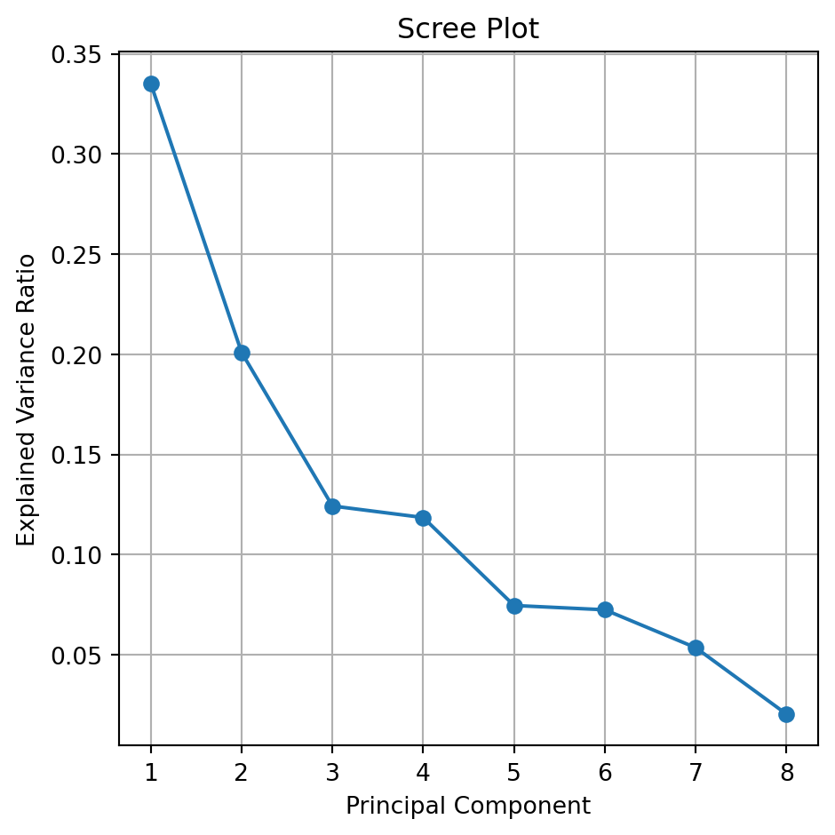
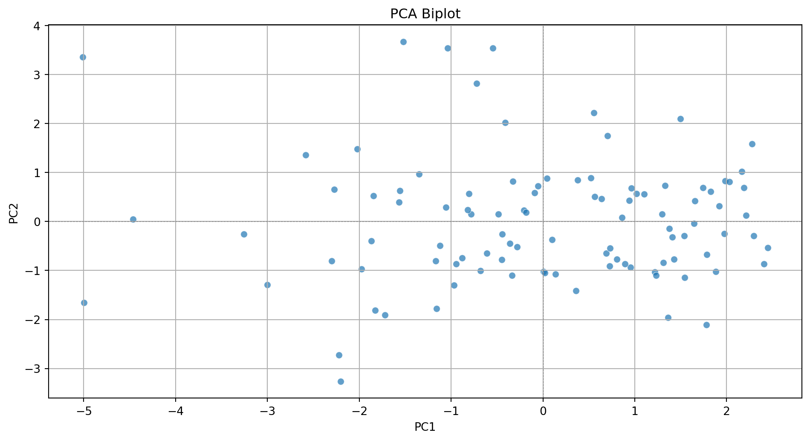
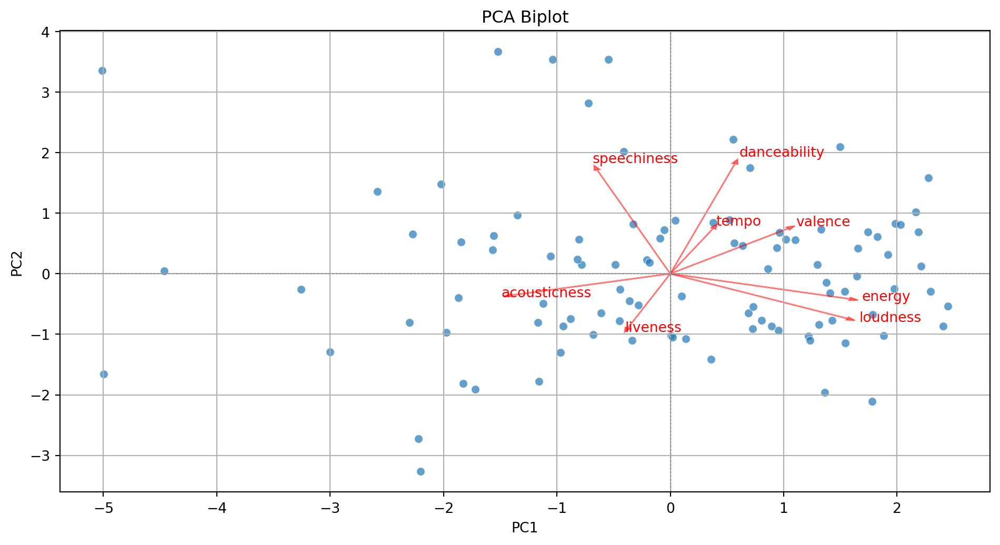
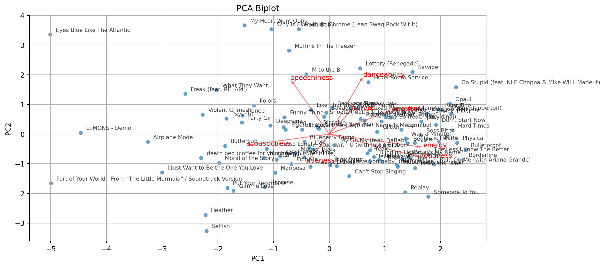

import numpy as np
import pandas as pd
import matplotlib.pyplot as plt
import seaborn as sns
from sklearn.preprocessing import StandardScaler
from sklearn.decomposition import PCAPrincipal Component Analysis
IN5148: Statistics and Data Science with Applications in Engineering
Agenda
- Introduction
- Dispersion in one or more dimensions
- Principal component analysis
Introduction
Load the libraries
Before we start, let’s import the data science libraries into Python.
Here, we use specific functions from the pandas, matplotlib, seaborn, and sklearn libraries in Python.
Types of learning
In data science, there are two main types of learning:
Supervised learning. In which we have multiple predictors and one response. The goal is to predict the response using the predictor values.
Unsupervised learning. In which we have only multiple predictors. The goal is to discover patterns in your data.
Unsupervised learning methods
Clustering Methods aim to find subgroups with similar data in the database.
Principal Component Analysis seeks an alternative representation of the data to make it easier to understand when there are many predictors in the database.
Here we will use these methods on predictors \(X_1, X_2, \ldots, X_p,\) which are numerical.
Dispersion in one or more dimensions
Dispersion in one dimension
The concept of principal components requires an understanding of the dispersion or variability of the data.
Suppose we have data for a single predictor.

Dispersion in two dimensions


Capturing dispersion
In some cases, we can capture the spread of data in two dimensions (predictors) using a single dimension.

Capturing dispersion
In some cases, we can capture the spread of data in two dimensions (predictors) using a single dimension.

A single predictor \(X_2\) captures much of the spread in the data.

Let’s see another example

Let’s see another example
A single predictor captures much of the dispersion in the data. In this case, the new predictor has the form \(Z_1 = a X_1 + b X_2 + c.\)

Alternatively, we can use two alternative dimensions to capture the dispersion.


A new coordinate system
The new coordinate axis is given by two new predictors, \(Z_1\) and \(Z_2\). Both are given by linear equations of the new predictors.
The first axis, \(Z_1\), captures a large portion of the dispersion, while \(Z_2\) captures a small portion from another angle.
The new axes, \(Z_1\) and \(Z_2\), are called principal components.
Principal Component Analysis
Dimension Reduction
Principal Components Analysis (PCA) helps us reduce the dimension of the data.
It creates a new coordinate axis in two (or more) dimensions.
Technically, it creates new predictors by combining highly correlated predictors. The new predictors are uncorrelated.
Setup
Step 1. We start with a database with \(n\) observations and \(p\) predictors.
| Predictor 1 | Predictor 2 | Predictor 3 |
|---|---|---|
| 15 | 14 | 5 |
| 2 | 1 | 6 |
| 10 | 3 | 17 |
| 8 | 18 | 9 |
| 12 | 16 | 11 |
Step 2. We standardize each predictor individually.
\[{\color{blue} \tilde{X}_{i}} = \frac{{ X_{i} - \bar{X}}}{ \sqrt{\frac{1}{n -1} \sum_{i=1}^{n} (X_{i} - \bar{X})^2 }}\]
| Predictor 1 | Predictor 2 | Predictor 3 | |
|---|---|---|---|
| 1.15 | 0.46 | -0.96 | |
| -1.52 | -1.20 | -0.75 | |
| 0.12 | -0.95 | 1.55 | |
| -0.29 | 0.97 | -0.13 | |
| 0.53 | 0.72 | 0.29 | |
| Sum | 0 | 0 | 0 |
| Variance | 1 | 1 | 1 |
Step 3. We assume that the standardized database is an \(n\times p\) matrix \(\mathbf{X}\).
\[\mathbf{X} = \begin{pmatrix} 1.15 & 0.46 & -0.96 \\ -1.52 & -1.20 & -0.75 \\ 0.12 & -0.95 & 1.55 \\ -0.29 & 0.97 & -0.13 \\ 0.53 & 0.72 & 0.29 \\ \end{pmatrix}\]
Algorithm
The PCA algorithm has its origins in linear algebra.
Its basic idea is:
Create a matrix \(\mathbf{C}\) with the correlations between the predictors of the matrix \(\mathbf{X}\).
Split the matrix \(\mathbf{C}\) into three parts, which give us the new coordinate axis and the importance of each axis.
Correlation matrix
Continuing with our example, the correlation matrix contains the correlations between two columns of \(\mathbf{X}\).

Partitioning the correlation matrix
The \(\mathbf{C}\) matrix is partitioned using the eigenvalue and eigenvector decomposition method.


The columns of \(\mathbf{B}\) define the axes of the new coordinate system. These axes are called principal components.
The diagonal values in \(\mathbf{A}\) define the individual importance of each principal component (axis).
Proportion of the dispersion explained by the component
\[\mathbf{A} = \begin{pmatrix} 1.60 & 0.00 & 0.00 \\ 0.00 & 1.07 & 0.00 \\ 0.00 & 0.00 & 0.33 \\ \end{pmatrix}\]
The proportion of the dispersion in the data that is captured by the first component is \(\frac{a_{1,1}}{p} = \frac{1.60}{3} = 0.53\).
\[\mathbf{A} = \begin{pmatrix} 1.60 & 0.00 & 0.00 \\ 0.00 & 1.07 & 0.00 \\ 0.00 & 0.00 & 0.33 \\ \end{pmatrix}\]
The proportion captured by the second component is \(\frac{a_{2,2}}{p} = \frac{1.07}{3} = 0.36\).
The proportion captured by the third component is \(\frac{a_{3,3}}{p} = \frac{0.33}{3} = 0.11.\)
Approximations are useful for storing large matrices.
This is because we only need to store the largest eigenvalues and their corresponding eigenvectors to recover a high-quality approximation of the entire matrix.
This is the idea behind image compression.

Example 1
Consider a database of the 100 most popular songs on TikTok. The data is in the file “TikTok 2020 reduced.xlsx”. There are observations of several predictors, such as:
Danceability describes how suitable a track is for dancing based on a combination of musical elements.
Energy is a measure from 0 to 1 and represents a perceptual measure of intensity and activity.
The overall volume of a track in decibels (dB). Loudness values are averaged across the entire track.
Other predictors are:
Speech detects the presence of spoken words in a track. The more exclusively speech-like the recording is.
A confidence measure from 0 to 1 about whether the track is acoustic.
Detects the presence of an audience in the recording.
A measure from 0 to 1 that describes the musical positivity a track conveys.
The data
tiktok_data = pd.read_excel("TikTok_Songs_2020_Reduced.xlsx")
tiktok_data.head()| track_name | artist_name | album | danceability | energy | loudness | speechiness | acousticness | liveness | valence | tempo | |
|---|---|---|---|---|---|---|---|---|---|---|---|
| 0 | Say So | Doja Cat | Hot Pink | 0.787 | 0.673 | -4.583 | 0.1590 | 0.26400 | 0.0904 | 0.779 | 110.962 |
| 1 | Blinding Lights | The Weeknd | After Hours | 0.514 | 0.730 | -5.934 | 0.0598 | 0.00146 | 0.0897 | 0.334 | 171.005 |
| 2 | Supalonely (feat. Gus Dapperton) | BENEE | Hey u x | 0.862 | 0.631 | -4.746 | 0.0515 | 0.29100 | 0.1230 | 0.841 | 128.978 |
| 3 | Savage | Megan Thee Stallion | Suga | 0.843 | 0.741 | -5.609 | 0.3340 | 0.02520 | 0.0960 | 0.680 | 168.983 |
| 4 | Moral of the Story | Ashe | Moral of the Story | 0.572 | 0.406 | -8.624 | 0.0427 | 0.58700 | 0.1020 | 0.265 | 119.812 |
Standardize the data
Remember that PCA works with distances, so we must standardize the quantitative predictors to have an accurate analysis.
# Select the predictors
features = ['danceability', 'energy', 'loudness', 'speechiness',
'acousticness', 'liveness', 'valence', 'tempo']
X_tiktok = tiktok_data.filter(features)
# Standardize the data
scaler = StandardScaler()
Xs_tiktok = scaler.fit_transform(X_tiktok)PCA in Python
We tell Python that we want to apply PCA using the function PCA() from sklearn. Next, we run the algorithm using .fit_transform().
pca = PCA()
PCA_tiktok = pca.fit_transform(Xs_tiktok)The Screen or Summary Plot tells you the variability captured by each component. This variability is given by the Eigenvalue. From 1 to 8 components.
The first component covers most of the data dispersion.
This graph is used to define the total number of components to use.

The code to generate a scree plot is below.
explained_var = pca.explained_variance_ratio_
plt.figure(figsize=(5, 5))
plt.plot(range(1, len(explained_var) + 1), explained_var,
marker='o', linestyle='-')
plt.title('Scree Plot')
plt.xlabel('Principal Component')
plt.ylabel('Explained Variance Ratio')
plt.xticks(range(1, len(explained_var) + 1))
plt.grid(True)
plt.tight_layout()
plt.show()Biplot
- Displays the graphical observations on the new coordinate axis given by the first two components.
- Helps visualize data for three or more predictors using a two-dimensional scatter plot.
- A red line indicates the growth direction of the labeled variable.

The code to generate the biplot is lenghty but it can be broken into three steps.
Step 1. Create a DataFrame with the PCA results
pca_df = pd.DataFrame(PCA_tiktok, columns=[f'PC{i+1}' for i in range(PCA_tiktok.shape[1])])
pca_df.head()| PC1 | PC2 | PC3 | PC4 | PC5 | PC6 | PC7 | PC8 | |
|---|---|---|---|---|---|---|---|---|
| 0 | 1.103065 | 0.558086 | -0.800688 | 0.446496 | 0.605944 | -0.044089 | 0.287325 | -0.413604 |
| 1 | 0.805080 | -0.766973 | 1.580513 | -2.215856 | 0.359655 | 0.708123 | -0.882761 | 0.113058 |
| 2 | 1.330433 | 0.728161 | -0.288982 | 0.376298 | 0.786185 | -1.134308 | 0.178388 | -0.242497 |
| 3 | 1.496277 | 2.095014 | 1.351398 | -0.621691 | 0.390949 | 0.494101 | 0.024648 | -0.080720 |
| 4 | -1.973362 | -0.966108 | -0.302071 | -1.266269 | 0.414639 | -0.335677 | -0.076711 | -0.140126 |
Step 2. Create biplot of first two principal components
Code
plt.figure(figsize=(10, 5.5))
sns.scatterplot(x=pca_df['PC1'], y=pca_df['PC2'], alpha=0.7)
plt.xlabel('PC1')
plt.ylabel('PC2')
plt.title('PCA Biplot')
plt.grid(True)
plt.tight_layout()
plt.axhline(0, color='gray', linestyle='--', linewidth=0.5)
plt.axvline(0, color='gray', linestyle='--', linewidth=0.5)
plt.show()
Step 3. Add more information to the biplot.
Code
plt.figure(figsize=(10, 5.5))
sns.scatterplot(x=pca_df['PC1'], y=pca_df['PC2'], alpha=0.7)
plt.xlabel('PC1')
plt.ylabel('PC2')
plt.title('PCA Biplot')
plt.grid(True)
plt.tight_layout()
plt.axhline(0, color='gray', linestyle='--', linewidth=0.5)
plt.axvline(0, color='gray', linestyle='--', linewidth=0.5)
# Add variable vectors
loadings = pca.components_.T[:, :2] # loadings for PC1 and PC2
for i, feature in enumerate(features):
plt.arrow(0, 0, loadings[i, 0]*3, loadings[i, 1]*3,
color='red', alpha=0.5, head_width=0.05)
plt.text(loadings[i, 0]*3.2, loadings[i, 1]*3.2, feature, color='red')
plt.show()
With some extra lines of code, we label the points in the plot.
Code
pca_df = pd.DataFrame(PCA_tiktok, columns=[f'PC{i+1}' for i in range(PCA_tiktok.shape[1])])
pca_df = (pca_df
.assign(songs = tiktok_data['track_name'])
)
plt.figure(figsize=(10, 5.5))
sns.scatterplot(x=pca_df['PC1'], y=pca_df['PC2'], alpha=0.7)
plt.xlabel('PC1')
plt.ylabel('PC2')
plt.title('PCA Biplot')
plt.grid(True)
plt.tight_layout()
plt.axhline(0, color='gray', linestyle='--', linewidth=0.5)
plt.axvline(0, color='gray', linestyle='--', linewidth=0.5)
# Add labels for each song
for i in range(pca_df.shape[0]):
plt.text(pca_df['PC1'][i] + 0.1, pca_df['PC2'][i] + 0.1,
pca_df['songs'][i], fontsize=8, alpha=0.7)
# Add variable vectors
loadings = pca.components_.T[:, :2] # loadings for PC1 and PC2
for i, feature in enumerate(features):
plt.arrow(0, 0, loadings[i, 0]*3, loadings[i, 1]*3,
color='red', alpha=0.5, head_width=0.05)
plt.text(loadings[i, 0]*3.2, loadings[i, 1]*3.2, feature, color='red')
plt.show()
Comments
Principal components can be used to approximate a matrix.
For example, we can approximate the matrix \(\mathbf{C}\) by setting the third component equal to zero.
\[\begin{pmatrix} -0.68 & 0.35 & 0.00 \\ -0.72 & -0.13 & 0.00 \\ 0.16 & 0.93 & 0.00\\ \end{pmatrix} \begin{pmatrix} 1.60 & 0.00 & 0.00 \\ 0.00 & 1.07 & 0.00 \\ 0.00 & 0.00 & 0.00 \\ \end{pmatrix} \begin{pmatrix} -0.68 & -0.72 & 0.16 \\ 0.35 & -0.13 & 0.93 \\ 0.00 & 0.00 & 0.00 \\ \end{pmatrix} = \begin{pmatrix} 0.86 & 0.73 & 0.18 \\ 0.73 & 0.85 & -0.30 \\ 0.18 & -0.30 & 0.96 \\ \end{pmatrix}\]
\[\approx \begin{pmatrix} 1.00 & 0.58 & 0.11 \\ 0.58 & 1.00 & -0.23 \\ 0.11 & -0.23 & 1.00 \\ \end{pmatrix} = \mathbf{C}\]